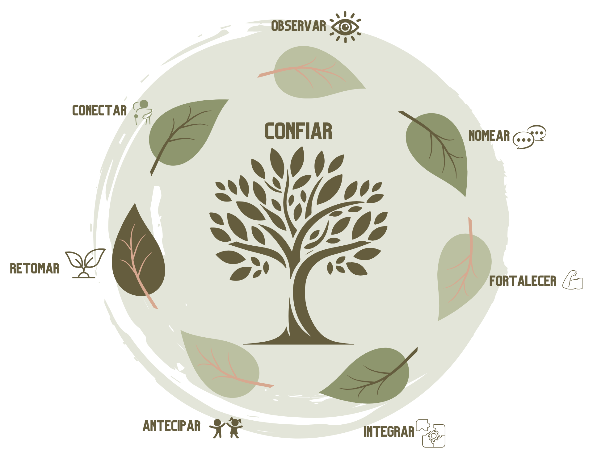

Este é o caminho para mães, professores e cuidadores que buscam exercer uma liderança com afeto, construindo autoridade e segurança emocional — sem gritar, sem culpa e sem violência emocional.
Assista acima à aula introdutória exclusiva:
Conheça a base do Método CONFIAR e saia com um plano de ação prático para transformar sua relação hoje mesmo.
O tempo está passando e a infância não espera enquanto você "aprende mais um pouco". Ela acontece agora, e cada limite imposto no grito ou no cansaço está moldando o sistema emocional do seu filho.
"O comportamento passa. A memória emocional fica."
O CreScER entrega mudança sustentável através do Método CONFIAR: uma evolução real para quem cansou de fórmulas mágicas.
✓ Ler o comportamento infantil como comunicação
✓ Ajustar sua resposta emocional antes de tentar corrigir a criança
✓ Construir autoridade baseada em segurança, não em medo
Entenda o papel de quem educa e aprenda a interromper o ciclo: explosão → culpa → repetição.
Mapa do desenvolvimento e ferramentas para comunicar limites claros sem precisar de ameaças.
Prevenção de abusos e educação sexual com clareza e responsabilidade, preservando o vínculo.
Gerencie crises em crianças atípicas e momentos de alta tensão sem romper a segurança emocional.
Participe do próximo encontro presencial avulso e sinta o impacto do método na prática.
✨ Bônus: Se decidir migrar para o curso completo, descontamos este valor no seu plano.
Raquel Candela é terapeuta há uma década, orientadora parental e especialista em trauma e apego seguro.
O CreScER nasceu da visão de um futuro onde cuidar não machuca, unindo clínica, neurociência e a vivência real da maternidade.
"Sustento vínculos reais todos os dias. Meu objetivo é que você também sustente os seus."
Todas as modalidades abaixo utilizam o sistema de mensalidade inteligente.
Assinatura Mensal
10x R$ 49,70
✅ Não consome seu limite
Método gravado para assistir onde quiser.
Assinar OnlineMensalidade VIP
10x R$ 199,70
✅ Não consome seu limite
Online Completo + 9 Meses Presencial + Mentorias.
Garantir Combo CompletoMensalidade Presencial
10x R$ 210,00
✅ Não consome seu limite
9 encontros presenciais com Raquel Candela.
Assinar PresencialVocê tem 30 dias para testar o método. Se por qualquer motivo sentir que o CreScER não é para você, basta enviar um e-mail e devolvemos 100% do seu investimento, sem perguntas.
O curso acontece na escola Kando, uma instituição diferenciada em educação infantil focada no aprendizado pelo método Regio Emilia. A escola fica no centro historico do município de Santana de Parnaíba - SP.
As despesas de desloamento são por conta da pessoa, durante o curso é disponibilizado um cofee break.
São 9 encontros presenciais, um para cada módulo. Cada encontro é projetado para durar cerca de 4h, das 08h até 12h.
O método cobre desde a primeira infância (desfralde/birras) até aos desafios da adolescência, focando no desenvolvimento neurológico e emocional em cada fase.
O curso foi feito para mães e educadores ocupados. As aulas online são curtas e práticas, e o encontro presencial acontece apenas uma vez por mês.
Não! O sistema de assinatura inteligente cobra apenas o valor da mensalidade a cada mês, deixando o seu limite livre para outras necessidades.
Você receberá o material de apoio e terá suporte na plataforma para não perder o fio condutor da jornada.
A maioria dos métodos foca em "adestrar" o comportamento da criança. O CreScER foca na regulação emocional do adulto e na neurociência do apego seguro, tratando a causa, não o sintoma.
Eles são complementares. O online traz a base teórica e técnica; o presencial é onde praticamos, tiramos dúvidas reais e vivemos a experiência em grupo com a Raquel.
Sim, temos a modalidade apenas online, mas recomendamos o Combo para quem deseja o suporte direto da Raquel nos encontros presenciais.
São encontros online extra para ajuste de rota, onde a Raquel responde a dúvidas específicas que surgem no dia a dia da aplicação do método. Acontecem 1 vez por mês durant 2 horas.
Você terá acesso durante toda a sua assinatura e, após a quitação das 10 parcelas, ganha mais 12 meses de acesso bónus.
Com certeza. O método oferece uma base sólida de desenvolvimento humano que transforma a prática em sala de aula ou no consultório.
Sim, a plataforma é preparada para pagar a assinatura via boleto ou pix como alternativas ao cartão.
Absolutamente não. Trabalhamos com a Educação Respeitosa e a Disciplina Positiva, focando na conexão antes da correção.
Com certeza! O método é para qualquer cuidador que deseje construir uma relação mais saudável e segura com a criança.
Não, o presencial é uma experiência vivencial e confidencial para o grupo. O que fica gravado é o conteúdo teórico da plataforma online.
Sim, ao concluir os módulos na plataforma online, você poderá emitir o seu certificado de conclusão.
É a oportunidade de participar de um único encontro presencial para conhecer o método sem se comprometer com os 9 meses de imediato.
Temos um link direto para o WhatsApp de suporte dentro da área de membros e na nossa página.
Sim. Para manter a qualidade e a profundidade do atendimento da Raquel, as vagas presenciais são estritamente limitadas.
 Falar com Suporte
Falar com Suporte